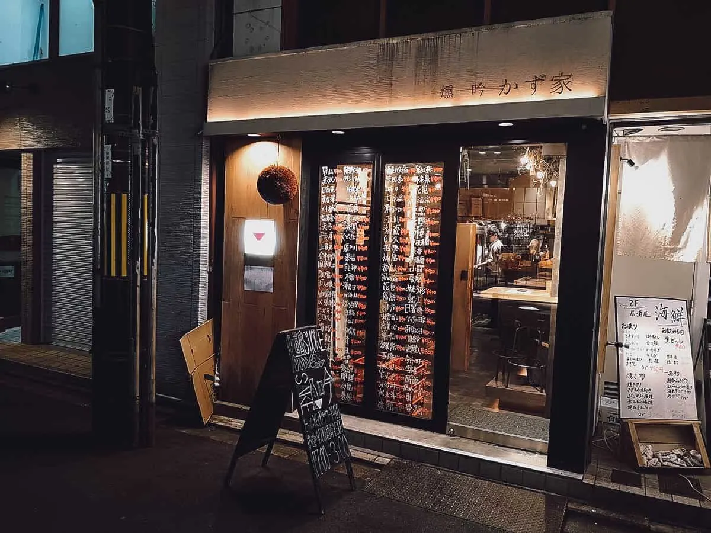
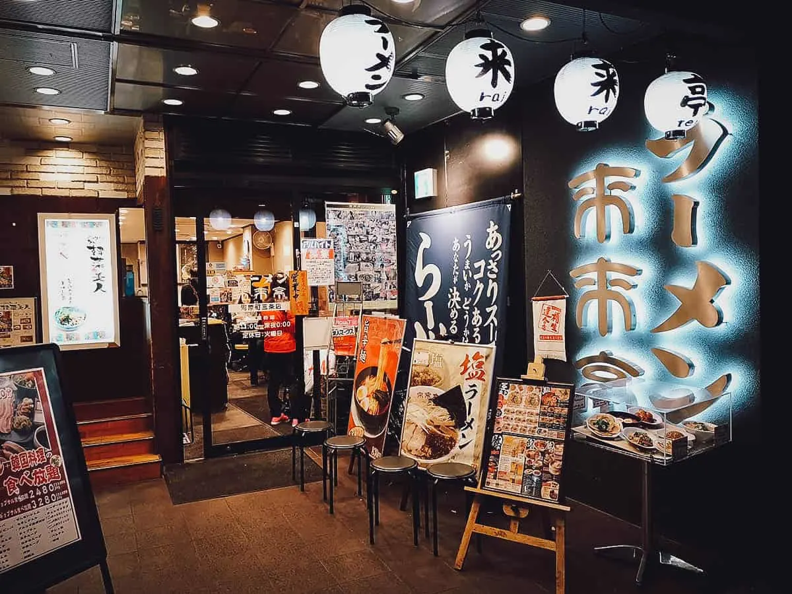
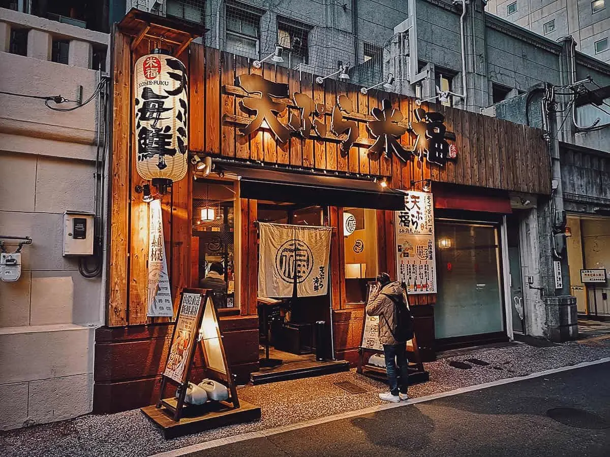
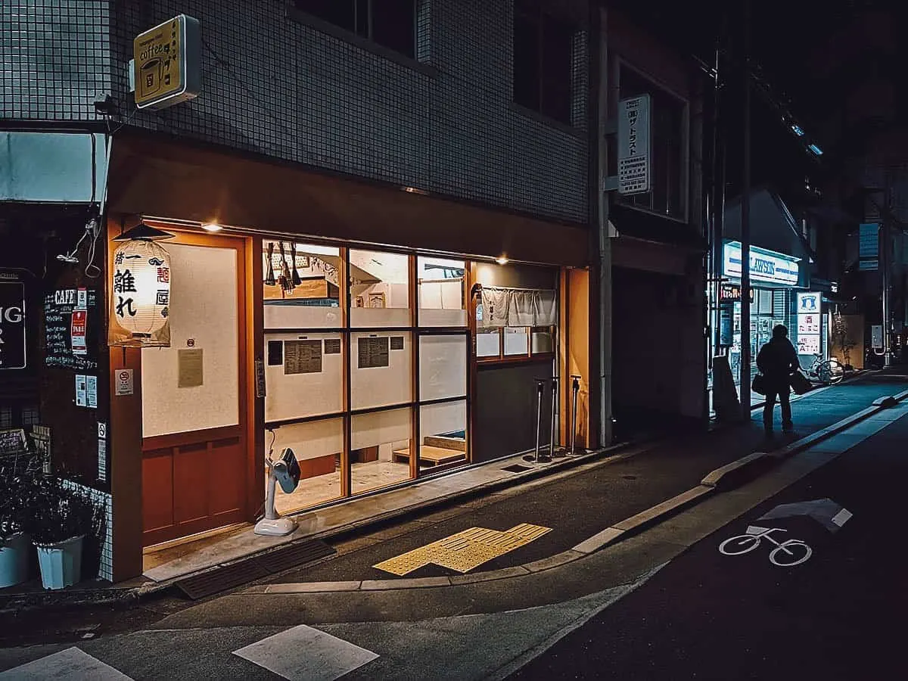

LOCATIONS
We are located in the city of Kyoto. We have many restaurants everywhere in the city, so you might accidentally come upon us when you're walking around the city. If you don't have enough time to look for us, or if you want to come and eat a delicious plate of ramen, here are our most famous spots.
Address: Japan, 〒605-0077 Kyoto, 京都市東山区Higashiyama Ward, 廿一軒町２２７ 岩橋ビル1F
Closest MRT Station: Gion-Shijo Station
Operating Hours: 4PM-12MN, daily
Expect to Pay: About JPY 400-700 per dish, JPY 500 per vial of sake
.webp)

Address: 河原町通三条下ル二丁目東入ル北車屋町276, 永吉ビル1F, 京都市中京区, Kyoto 604-8021, Japan
Closest MRT Station: Sanjo or Gion-Shijo Station
Operating Hours: 5PM-3AM, daily
Expect to Pay: About JPY 300-700 per dish, JPY 700-900 per glass of sake
Address: Japan, 〒604-8031 Kyoto, Nakagyo Ward, 河原町東入ル大黒町37 文明堂京都ビル1F
Closest MRT Station: Sanjo Station
Operating Hours: 11AM-12MN, daily
Expect to Pay: About JPY 800 per bowl of ramen


Address: 657-5 Bantoyacho, Nakagyo Ward, Kyoto, 604-8143, Japan
Closest MRT Station: Karasuma Station
Operating Hours: 11:30AM-3PM, 5:30-11PM, dail
Expect to Pay: Around JPY 890-1,890 for a tempura set
Address: Japan, 〒600-8076 Kyoto, Shimogyo Ward, Senshojicho, 463 ルネ丸高 1F
Closest MRT Station: Karasuma Station
Operating Hours: 11AM-2:30PM, 6-9PM, daily
Expect to Pay: About 1,200 per bowl of ramen
